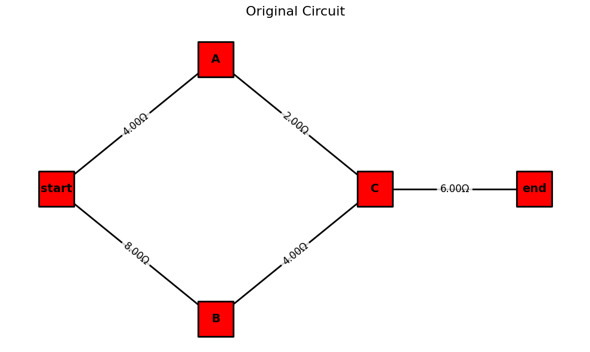
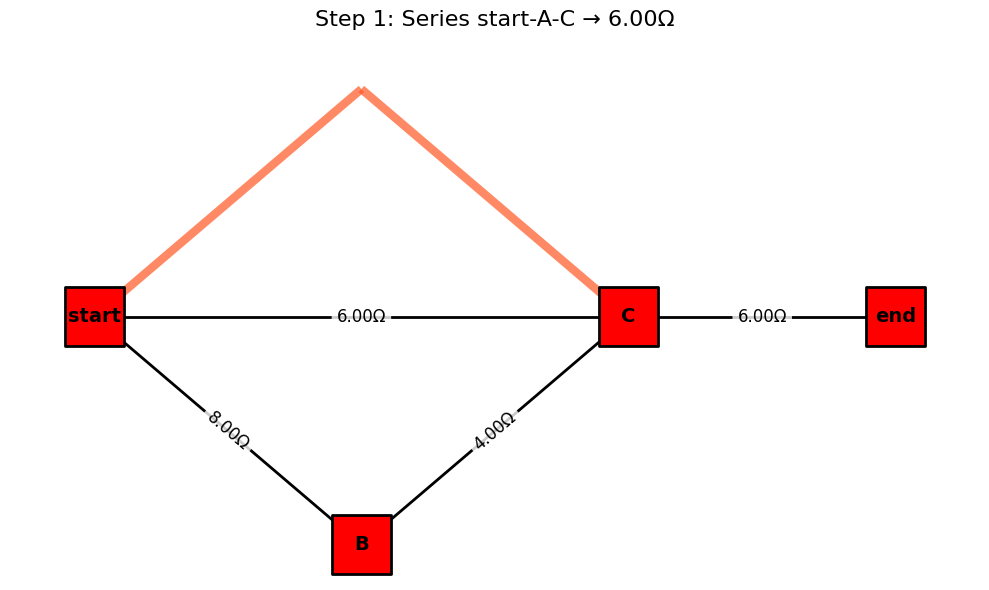
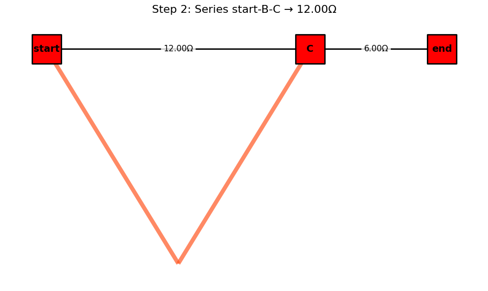
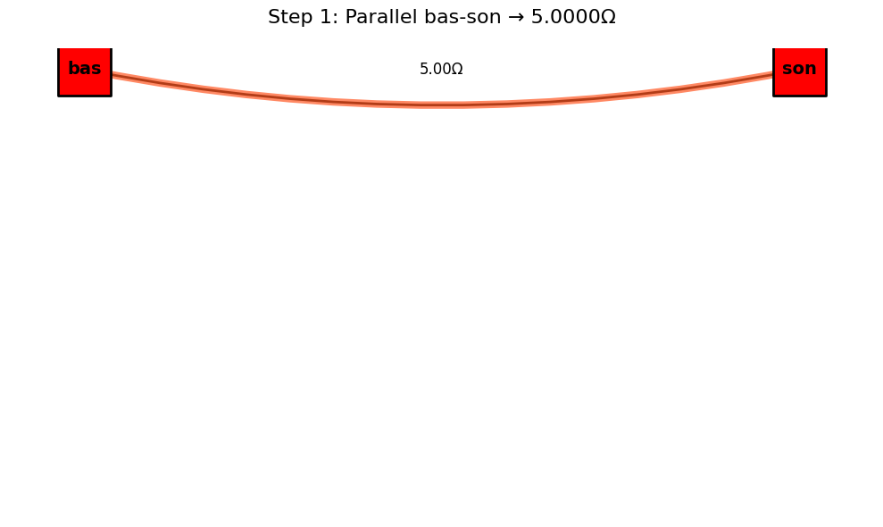

Problem 1
Equivalent Resistance Using Graph Theory
Introduction and Motivation
Calculating equivalent resistance is a fundamental task in circuit analysis. While traditional approaches use series and parallel simplification rules manually, graph theory provides a powerful alternative – transforming circuit analysis into an algorithmic graph simplification process.
Circuits can be represented as graphs: - Nodes = junctions - Edges = resistors (with resistance as weight)
By identifying series and parallel patterns in the graph, we can iteratively reduce it to compute total resistance between two terminals.
This approach is: - Scalable for large networks - Automatable for software - Insightful for understanding electrical connectivity and topology
Learning Goals
After completing this task, you should be able to:
- Represent a resistor network as a weighted graph.
- Apply reduction rules (series and parallel) using graph algorithms.
- Implement an algorithm that simplifies arbitrary configurations.
- Analyze different circuit structures programmatically.
Algorithm
The circuit is modeled as a multigraph G = (V, E), where V is the set of junctions (nodes) and E is the set of resistors (edges). Each edge e ∈ E has a weight r_e representing its resistance. Two distinct nodes, start_node and end_node, are specified as the terminals across which the equivalent resistance is sought.
The algorithm proceeds as follows:
- Initialization:
- Construct the graph from the given circuit components.
-
Validate that
start_nodeandend_nodeexist in the graph. Ifstart_node=end_node, the resistance is 0Ω. -
Iterative Reduction: Repeatedly apply the following reduction rules until no more simple series or parallel reductions are possible, or the graph is reduced to a single edge between
start_nodeandend_node. - Parallel Reduction: Identification: Find any pair of nodes (u, v) connected by two or more edges (resistors R₁, R₂, ..., R_k).
- Reduction: Replace these k parallel resistors with a single equivalent resistor R_p between u and v. The equivalent resistance is calculated as: ( R_p = (Σᵢ₌₁ᵏ 1/R_i)⁻¹ ) if any R_i = 0, R_p = 0. If all R_i = ∞, R_p = ∞.
- Action: Remove the original k edges and add a new edge (u, v) with resistance R_p. If R_p = ∞, effectively remove the connection unless it's the only path.
- After a reduction, restart the scan for further simplifications as the graph structure has changed.
Series Reduction:
- Identification: Find any node w such that:
- w is not the
start_nodeorend_node. - The degree of w, deg(w), is exactly 2. Let the two edges incident to w be (u, w) with resistance R₁, and (w, v) with resistance R₂.
- Ensure u ≠ v₁ (if u = v, it's a loop, not a simple series element in a path from
start_nodetoend_node). - Reduction: Replace the two series resistors R₁ and R₂, and the intermediate node w with a single equivalent resistor R_s between u and v. The equivalent resistance is: ( R_s = R₁ + R₂ ) if R₁ = ∞ or R₂ = ∞, then R_s = ∞.
- Action: Remove node w (which also removes edges (u, w) and (w, v)). Add a new edge (u, v) with resistance R_s. If R_s = ∞, effectively this path segment becomes an open circuit.
- After a reduction, restart the scan.
- Reduction: Replace these k parallel resistors with a single equivalent resistor R_p between u and v. The equivalent resistance is calculated as: ( R_p = (Σᵢ₌₁ᵏ 1/R_i)⁻¹ ) if any R_i = 0, R_p = 0. If all R_i = ∞, R_p = ∞.
- Action: Remove the original k edges and add a new edge (u, v) with resistance R_p. If R_p = ∞, effectively remove the connection unless it's the only path.
- After a reduction, restart the scan for further simplifications as the graph structure has changed.
- Action: Remove node w (which also removes edges (u, w) and (w, v)). Add a new edge (u, v) with resistance R_s. If R_s = ∞, effectively this path segment becomes an open circuit.
- After a reduction, restart the scan.
Termination and Result:
- The loop terminates if no series or parallel reductions were made in a full pass.
- Ideal Case: If the graph is reduced to a single edge between
start_nodeandend_node, its resistance is the equivalent resistance. - Final Parallel Case: If the graph consists of only
start_nodeandend_nodeand multiple edges directly connecting them, these are in parallel. Calculate their combined parallel resistance. - Non-Reducible Case: If the graph cannot be simplified further by these rules to one of the above states, the circuit may contain non-series-parallel configurations (e.g., a Wheatstone bridge not in balance). The algorithm, in this form, will report that it cannot fully reduce the circuit.
- Open Circuit: If, at any point or at the end, there is no path between
start_nodeandend_node, the equivalent resistance is ∞. - Short Circuit: If an equivalent resistance of 0Ω is found.
Series Connection
Two resistors R₁ and R₂ in series: R_eq = R₁ + R₂
Parallel Connection
Two resistors R₁ and R₂ in parallel: 1/R_eq = 1/R₁ + 1/R₂ => R_eq = (1/R₁ + 1/R₂)⁻¹
Phyton İmplemntaion
from IPython import get_ipython
from IPython.display import display
import matplotlib.pyplot as plt
import networkx as nx
class ResistorNetworkAnalyzer:
def __init__(self):
self.step_count = 0
self.visualization_steps = []
def _get_edge_labels(self, G):
"""Helper function to generate edge labels with resistance values"""
edge_labels = {}
for u, v, data in G.edges(data=True):
if 'resistance' in data:
# Handle MultiGraph key access here as well
if isinstance(G, nx.MultiGraph) and len(G[u][v]) > 1:
# If multiple edges, show all resistances
labels = [f"{d.get('resistance', 0):.2f}Ω" for k, d in G[u][v].items()]
edge_labels[(u, v)] = ', '.join(labels)
else:
edge_labels[(u, v)] = f"{data['resistance']:.2f}Ω"
# Removed the redundant elif for MultiGraph, handled above
return edge_labels
def draw_circuit(self, G, pos, title, highlight_edges=None):
"""Improved visualization function with better highlighting"""
plt.figure(figsize=(10, 6))
# Node styling - Tüm düğümler kırmızı ve kare şeklinde
node_colors = ['#FF0000' for node in G.nodes()] # Tüm düğümler için kırmızı renk
nx.draw_networkx_nodes(G, pos, node_color=node_colors, node_size=1800,
node_shape='s', edgecolors='black', linewidths=2) # Kare şekil
nx.draw_networkx_labels(G, pos, font_size=14, font_weight='bold')
# Draw all edges
# Need to handle MultiGraph edges explicitly for drawing
if isinstance(G, nx.MultiGraph):
# Draw each edge individually for MultiGraphs
for u, v, key, data in G.edges(keys=True, data=True):
# Use connectionstyle to curve parallel edges for better visibility
nx.draw_networkx_edges(G, pos, edgelist=[(u,v)], width=2, edge_color='black', connectionstyle='arc3,rad=0.1')
else:
nx.draw_networkx_edges(G, pos, width=2, edge_color='black')
# Highlight edges that were modified
if highlight_edges:
# Need to handle MultiGraph highlighting carefully
if isinstance(G, nx.MultiGraph):
highlight_edges_with_keys = []
for u, v in highlight_edges:
if G.has_edge(u, v):
# Highlight all edges between u and v (assuming highlight_edges contains the pairs that were combined)
# A more precise highlighting would require knowing the keys of the edges that were removed.
# For visualization purposes, highlighting the path between nodes u and v is often sufficient.
for key in G[u][v]:
highlight_edges_with_keys.append((u, v, key))
if highlight_edges_with_keys:
nx.draw_networkx_edges(G, pos, edgelist=highlight_edges_with_keys,
edge_color='#FF5722', width=6, alpha=0.7, connectionstyle='arc3,rad=0.1')
else:
nx.draw_networkx_edges(G, pos, edgelist=highlight_edges,
edge_color='#FF5722', width=6, alpha=0.7)
# Edge labels with resistance values
edge_labels = self._get_edge_labels(G)
# nx.draw_networkx_edge_labels has issues with MultiGraph parallel edges.
# It often labels only one of the parallel edges or overlaps labels.
# A more advanced labeling for MultiGraphs might involve manually positioning labels.
# For this example, we will keep the standard labeling, but be aware of limitations.
nx.draw_networkx_edge_labels(G, pos, edge_labels=edge_labels, font_size=12,
bbox=dict(facecolor='white', edgecolor='none',
alpha=0.8, boxstyle='round,pad=0.3'))
plt.title(title, fontsize=16, pad=20)
plt.axis('off')
plt.tight_layout()
# Check if running in a Jupyter environment before trying to display
ipython = get_ipython()
if ipython is not None:
display(plt.gcf()) # Use display for inline plotting in Jupyter
else:
plt.show() # Fallback for non-Jupyter environments
plt.close() # Close the figure after showing to prevent memory issues
def combine_series(self, G, pos):
"""Combine series resistors with visualization"""
changed = True
while changed:
changed = False
for node in list(G.nodes):
# Exclude terminal nodes and check degree
# For MultiGraph, degree counts each edge
if node not in ("start", "end", "bas", "son") and G.degree(node) == 2:
neighbors = list(G.neighbors(node))
# Ensure there are exactly two distinct neighbors
if len(neighbors) == 2 and neighbors[0] != neighbors[1]:
u, v = neighbors
# In a MultiGraph, need to check if there's only one edge between node and each neighbor
if isinstance(G, nx.MultiGraph):
if G.number_of_edges(node, u) > 1 or G.number_of_edges(node, v) > 1:
continue # Skip if there are parallel edges connected to this node
# Assuming a single edge, get data for key 0 (default for add_edge in MultiGraph)
try:
r1 = G[node][u][0].get('resistance', 0)
r2 = G[node][v][0].get('resistance', 0)
except KeyError:
# Handle cases where edge key 0 doesn't exist (unlikely with add_edge but safe)
print(f"Error accessing edge data for node {node} and neighbors {u}, {v}. Skipping series combination.")
continue
else: # Standard Graph
try:
r1 = G[node][u].get('resistance', 0)
r2 = G[node][v].get('resistance', 0)
except KeyError:
print(f"Error accessing edge data for node {node} and neighbors {u}, {v}. Skipping series combination.")
continue
if r1 <= 0 or r2 <= 0: # Check for non-positive resistance
print(f"Warning: Non-positive resistance detected at node {node}. Skipping series combination.")
continue
combined = r1 + r2
# Store edges being combined for visualization - assuming single edges in series
# For visualization, we only need the node pairs, not keys, for highlight_edges
edges_to_highlight = [(node, u), (node, v)]
# Modify the graph
G.remove_node(node)
# When adding edge in MultiGraph, a new key is assigned (usually 0 if first edge)
G.add_edge(u, v, resistance=combined)
changed = True
self.step_count += 1
# Visualize this step
title = f"Step {self.step_count}: Series {u}-{node}-{v} → {combined:.2f}Ω"
self.draw_circuit(G, pos, title, edges_to_highlight)
# For visualization steps storage, store the graph copy
self.visualization_steps.append((G.copy(), title, edges_to_highlight))
break # Restart iteration after modification
if changed:
break # Ensure we break after a change to avoid infinite loops
def combine_parallel(self, G, pos):
"""Combine parallel resistors with visualization"""
# This function is primarily designed for MultiGraph.
# nx.Graph does not support parallel edges.
if not isinstance(G, nx.MultiGraph):
return # Do nothing if not a MultiGraph
changed = True
while changed:
changed = False
parallel_pairs = self._find_parallel_pairs(G)
for u, v in parallel_pairs:
# Ensure nodes are not terminals unless source/sink are in parallel
# We allow combining parallel paths between 'start'/'bas' and 'end'/'son'
is_terminal_pair = (u in ("start", "end", "bas", "son") and v in ("start", "end", "bas", "son"))
is_single_terminal = (u in ("start", "end", "bas", "son") or v in ("start", "end", "bas", "son")) and not is_terminal_pair
if is_single_terminal:
# Don't combine parallel edges connected to only one terminal unless it's the final source/sink pair
continue
edges_data = self._get_parallel_edges_data(G, u, v)
if len(edges_data) > 1:
try:
# Check for non-positive resistance to avoid division by zero or invalid calculations
if any(e.get('resistance', 0) <= 0 for e in edges_data):
print(f"Warning: Non-positive resistance detected between {u} and {v}. Cannot combine parallel.")
continue
# Calculate combined resistance for parallel resistors
conductances = [1/e['resistance'] for e in edges_data]
combined = 1 / sum(conductances)
# Store edges that were combined for visualization (as node pairs)
# For visualization, we just need the node pair (u,v) to highlight the connection
edges_to_highlight = [(u, v)]
# Modify the graph: remove all parallel edges and add a single new one
# Need to get the keys before removing
keys_to_remove = list(G[u][v].keys())
G.remove_edges_from([(u, v, k) for k in keys_to_remove])
# Add the new combined edge (usually gets key 0 if first edge)
G.add_edge(u, v, resistance=combined)
changed = True
self.step_count += 1
# Visualize this step
title = f"Step {self.step_count}: Parallel {u}-{v} → {combined:.4f}Ω"
# For visualization, pass the node pair for highlighting
self.draw_circuit(G, pos, title, edges_to_highlight)
# For visualization steps storage, store the graph copy
self.visualization_steps.append((G.copy(), title, edges_to_highlight))
break # Restart iteration after modification
except KeyError as e:
print(f"Error accessing edge data between {u} and {v}: {e}")
continue
if changed:
break # Ensure we break after a change to avoid infinite loops
def _find_parallel_pairs(self, G):
"""Find all pairs of nodes with parallel edges in a MultiGraph"""
pairs = set()
if isinstance(G, nx.MultiGraph):
# Iterate through all edges, consider undirected pairs
for u, v, key in G.edges(keys=True):
# Use a canonical representation for the pair (e.g., sorted tuple)
pair = tuple(sorted((u, v)))
# Check if there are more than 1 edges between u and v (in either direction for undirected)
if G.number_of_edges(u, v) > 1 or G.number_of_edges(v, u) > 1:
pairs.add(pair)
# No need to check for parallel edges in nx.Graph, as it doesn't support them
return list(pairs)
def _get_parallel_edges_data(self, G, u, v):
"""Get data for all parallel edges between two nodes in a MultiGraph"""
if isinstance(G, nx.MultiGraph):
edge_data_list = []
# Check if the edge (u,v) exists and add its data
if u in G and v in G[u]:
edge_data_list.extend([G[u][v][key] for key in G[u][v]])
# Check the reverse direction (v,u) as well for undirected graphs
if v in G and u in G[v] and u != v: # Avoid adding self-loops twice
edge_data_list.extend([G[v][u][key] for key in G[v][u]])
# Remove potential duplicates if an edge was added in both directions (unlikely with how networkx works by default for undirected)
# Simple approach: convert to a set of unique edge data dictionaries (requires dictionaries to be hashable, which they are not)
# Better approach: collect edge keys seen to avoid duplicates
seen_keys = set()
unique_edge_data = []
# Iterate through edges (u,v) and (v,u) with keys
if u in G and v in G[u]:
for key, data in G[u][v].items():
if (u,v,key) not in seen_keys and (v,u,key) not in seen_keys: # Check both directions
unique_edge_data.append(data)
seen_keys.add((u,v,key))
seen_keys.add((v,u,key)) # Add reverse for undirected check
return unique_edge_data
return [] # Return empty list if not MultiGraph or no parallel edges
def simplify_network(self, G, pos, source, sink):
"""Main function to simplify the resistor network"""
self.step_count = 0
self.visualization_steps = []
# Initial visualization
self.draw_circuit(G, pos, "Original Circuit")
# Make a copy to work with
# Use deepcopy if edge attributes might contain mutable objects, though 'resistance' is float.
working_graph = G.copy()
# Alternate between series and parallel combinations
# Use node count as well, as series combination removes nodes
prev_state = (len(working_graph.nodes()), len(working_graph.edges()))
# Limit the number of iterations to prevent infinite loops in complex or irreducible circuits
# A more robust approach might involve tracking visited states or using a more sophisticated simplification algorithm.
max_iterations = len(G.nodes()) + len(G.edges()) * 2 # Increased limit slightly
iteration_count = 0
while iteration_count < max_iterations:
series_changed = False
parallel_changed = False
# Perform one pass of series combinations
nodes_before_series = list(working_graph.nodes())
self.combine_series(working_graph, pos)
nodes_after_series = list(working_graph.nodes())
if len(nodes_before_series) != len(nodes_after_series):
series_changed = True
# Perform one pass of parallel combinations
edges_before_parallel = len(list(working_graph.edges()))
self.combine_parallel(working_graph, pos)
edges_after_parallel = len(list(working_graph.edges()))
if edges_before_parallel != edges_after_parallel:
parallel_changed = True
# Check if we're stuck (no changes in nodes or edges)
current_state = (len(working_graph.nodes()), len(list(working_graph.edges())))
if current_state == prev_state:
break
prev_state = current_state
iteration_count += 1
# Check for maximum iterations reached
if iteration_count == max_iterations and current_state != prev_state:
print(f"Warning: Maximum iterations ({max_iterations}) reached before full simplification. The circuit might be irreducible by series/parallel combinations or more complex.")
# Final result
# Initialize final_resistance to None outside the try block
final_resistance = None
try:
# Check if the graph has been reduced to a single edge between source and sink
if working_graph.has_edge(source, sink):
# If it's a MultiGraph, there might be multiple parallel edges left between source and sink.
# The equivalent resistance is the parallel combination of these.
if isinstance(working_graph, nx.MultiGraph) and working_graph.number_of_edges(source, sink) > 1:
print(f"Multiple parallel paths remaining between {source} and {sink}. Calculating final equivalent resistance.")
edges_data = self._get_parallel_edges_data(working_graph, source, sink)
if edges_data:
# Check for non-positive resistance before calculating
if any(e.get('resistance', 0) <= 0 for e in edges_data):
print(f"Warning: Non-positive resistance detected between {source} and {sink}. Cannot calculate final equivalent resistance.")
final_resistance = None # Keep it None or set to NaN
else:
conductances = [1/e['resistance'] for e in edges_data]
final_resistance = 1 / sum(conductances)
print(f"Final equivalent resistance: {final_resistance:.4f}Ω") # Increased precision for final result
else:
print(f"No edges found between {source} and {sink} despite has_edge reporting True (unexpected).")
final_resistance = None
else: # Simple Graph or MultiGraph with only one edge left
final_resistance = working_graph[source][sink].get('resistance') # Use .get() for safety
if final_resistance is not None:
print(f"Final equivalent resistance: {final_resistance:.2f}Ω")
else:
print(f"Edge between {source} and {sink} found, but resistance attribute is missing.")
else:
# This block is executed if no single source-sink edge exists after simplification
print("Could not reduce to a single equivalent resistance between source and sink.")
# final_resistance remains None, which is now initialized
except KeyError as e:
print(f"Error accessing edge data for final resistance between {source} and {sink}: {e}")
final_resistance = None # Ensure it's None in case of error
except Exception as e:
print(f"An unexpected error occurred during final resistance calculation: {e}")
final_resistance = None
# Draw the final simplified circuit
self.draw_circuit(working_graph, pos, f"Final Simplified Circuit (Steps: {self.step_count})")
return working_graph, final_resistance
# ======= Example Circuits =======
# Circuit 1: Series-Parallel Combination (Already in your code)
G1 = nx.Graph()
G1.add_edge('start', 'A', resistance=4)
G1.add_edge('A', 'C', resistance=2)
G1.add_edge('start', 'B', resistance=8)
G1.add_edge('B', 'C', resistance=4)
G1.add_edge('C', 'end', resistance=6)
pos1 = {
'start': (0, 0),
'A': (1, 1),
'B': (1, -1),
'C': (2, 0),
'end': (3, 0)
}
# Circuit 2: Parallel Configuration (Already in your code)
G2 = nx.MultiGraph()
G2.add_edge('start', 'C', resistance=6)
G2.add_edge('start', 'C', resistance=12)
G2.add_edge('C', 'end', resistance=6) # This edge is in series with the parallel start-C combination
pos2 = {
'start': (0, 0),
'C': (3, 0),
'end': (6, 0)
}
# --- NEW: Pure Parallel Circuit Example ---
G_paralel = nx.MultiGraph()
G_paralel.add_edge('bas', 'son', resistance=10)
G_paralel.add_edge('bas', 'son', resistance=15)
G_paralel.add_edge('bas', 'son', resistance=30)
pos_paralel = {
'bas': (0, 0),
'son': (1, 0)
}
# ----------------------------------------
# Create analyzer instance
analyzer = ResistorNetworkAnalyzer()
# Analyze first circuit
print("\nAnalyzing Circuit 1")
simplified_G1, R_eq1 = analyzer.simplify_network(G1, pos1, 'start', 'end')
if R_eq1 is not None:
print(f"Result for Circuit 1: R_eq = {R_eq1:.2f}Ω")
else:
print("Could not determine equivalent resistance for Circuit 1.")
# Analyze second circuit
print("\nAnalyzing Circuit 2")
simplified_G2, R_eq2 = analyzer.simplify_network(G2, pos2, 'start', 'end')
if R_eq2 is not None:
print(f"Result for Circuit 2: R_eq = {R_eq2:.2f}Ω")
else:
print("Could not determine equivalent resistance for Circuit 2.")
# --- Analyze the Pure Parallel Circuit ---
print("\nAnalyzing Pure Parallel Circuit")
simplified_G_paralel, R_eq_paralel = analyzer.simplify_network(G_paralel, pos_paralel, 'bas', 'son')
if R_eq_paralel is not None:
print(f"Result for Pure Parallel Circuit: R_eq = {R_eq_paralel:.2f}Ω")
else:
print("Could not determine equivalent resistance for Pure Parallel Circuit.")
# ------------------------------------------



